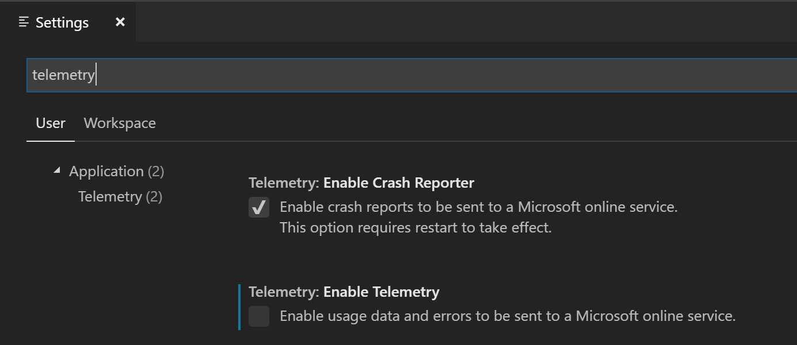
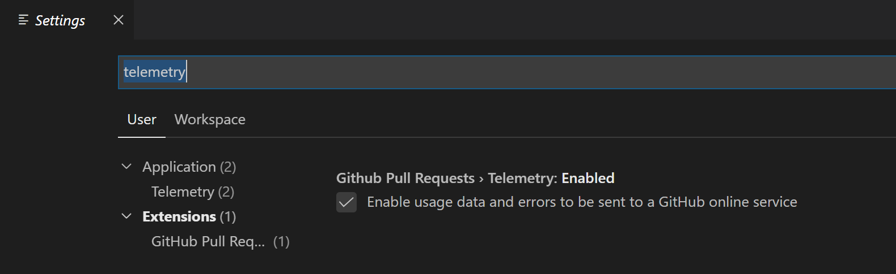
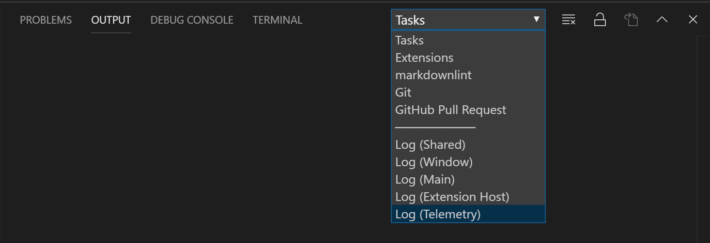
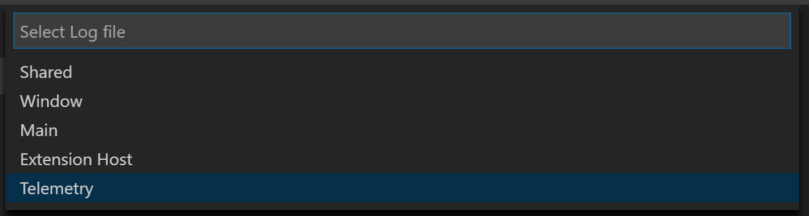
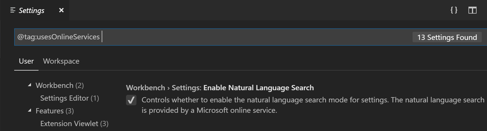
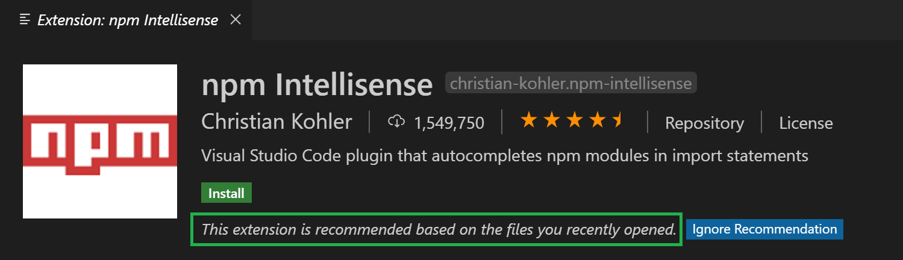

Telemetry
Visual Studio Code collects telemetry data, which is used to help understand how to improve the product. For example, this usage data helps to debug issues, such as slow start-up times, and to prioritize new features. While we appreciate the insights this data provides, we also know that not everyone wants to send usage data and you can disable telemetry as described in disable telemetry reporting. You can also read our privacy statement to learn more.
Disable telemetry reporting
If you don't want to send usage data to Microsoft, you can set the telemetry.enableTelemetry user setting to false.
From File > Preferences > Settings (macOS: Code > Preferences > Settings), search for telemetry, and uncheck the Telemetry: Enable Telemetry setting. This will silence all telemetry events from VS Code going forward. Telemetry information may have been collected and sent up until the point when you disable the setting.

If you use the JSON editor for your settings, add the following line:
"telemetry.enableTelemetry": false
Disable crash reporting
VS Code collects data about any crashes that occur and sends it to Microsoft to help improve our products and services.
If you don't want to send crash data to Microsoft, you can change the enable-crash-reporter runtime argument to false
- Open the Command Palette (
kb(workbench.action.showCommands)). - Run the Preferences: Configure Runtime Arguments command.
- This command will open a
argv.jsonfile to configure runtime arguments. - Edit
"enable-crash-reporter": false. - Restart VS Code.
Extensions and telemetry
VS Code lets you add features to the product by installing Microsoft and third-party extensions. These extensions may be collecting their own usage data and are not controlled by the telemetry.enableTelemetry setting. Consult the specific extension's documentation to learn about its telemetry reporting and whether it can be disabled.
For example, the GitHub Pull Requests extension has a setting to disable its telemetry collection:

Output channel for telemetry events
If you'd like to review the telemetry events in VS Code as they are sent, you can enable tracing and it will record telemetry events. Set the log level to Trace using the Developer: Set Log Level... command and then in the Output panel (kb(workbench.action.output.toggleOutput)), pick Log (Telemetry) from the dropdown.

When tracing telemetry events, the events are also logged to a local file telemetry.log, which you can view using the Developer: Open Log File... command and choosing Telemetry from the dropdown.

Viewing all telemetry events
If you'd like to view all the possible telemetry events that VS Code could send, you can use the --telemetry flag in the CLI. This will generate a JSON report that you can then view within VS Code. These reports are generated per build and do not contain extension telemetry unless the extension author adds a telemetry.json file to their root build directory.
For example, running code --telemetry > telemetry.json && code telemetry.json will create a telemetry.json file in your current working directory and then open it in VS Code. You cannot pipe the output like this, code --telemetry | code -, due to the length of the telemetry report.
GDPR and VS Code
In addition to supporting the General Data Protection Regulation (GDPR), the VS Code team takes privacy very seriously. That's both for Microsoft as a company and specifically within the VS Code team.
To ensure GDPR compliance, we made several updates to VS Code, these include:
- Making it easier to opt out of telemetry collection by placing a notification in product for all existing and new users.
- Reviewing and classifying the telemetry that we send (documented in our OSS codebase).
- Ensuring that we have valid data retention policies in place for any data we do collect, for example crash dumps.
In short, we have worked hard to do the right thing, for all users, as these practices apply to all geographies, not just Europe.
One question we expect people to ask is to see the data we collect. However, we don't have a reliable way to do this as VS Code does not have a 'sign-in' experience that would uniquely identify a user. We do send information that helps us approximate a single user for diagnostic purposes (this is based on a hash of the network adapter NIC) but this is not guaranteed to be unique. For example, virtual machines (VMs) often rotate NIC IDs or allocate from a pool. This technique is sufficient to help us when working through problems, but it is not reliable enough for us to 'provide your data'.
We expect our approach to evolve as we learn more about GDPR and the expectations of our users. We greatly appreciate the data users do send to us, as it is very valuable and VS Code is a better product for everyone because of it. And again, if you are worried about privacy, we offer the ability to disable sending telemetry as described in disable telemetry reporting.
You can find more information about how the Visual Studio family approaches GDPR at Visual Studio Family Data Subject Requests for the GDPR.
Managing online services
Beyond crash reporting and telemetry, VS Code uses online services for various other purposes such as downloading product updates, finding, installing, and updating extensions, Settings Sync, or providing Natural Language Search within the Settings editor. You can choose to turn on/off features that use these services.
Please note, that turning off these features does not put VS Code into offline mode. For example, if you search for extensions in the Extensions view, VS Code still searches the online VS Code Marketplace. The settings ensure that VS Code does not talk to online services without you requesting it.
From File > Preferences > Settings (macOS: Code > Preferences > Settings), and type the tag @tag:usesOnlineServices. This will display all settings that control the usage of online services and you can individually switch them on or off.

Note: VS Code extensions may also use online services and may not provide settings to configure the usage of these online services, or they may not register their settings to show up when searching for
@tag:usesOnlineServices. Consult the specific extension's documentation to learn about its usage of online services.
Non-Microsoft online services used by VS Code
The built-in npm support for VS Code extension sends requests to https://registry.npmjs.org and https://registry.bower.io.
The built-in TypeScript and JavaScript Language Features extension queries the @types domain at https://registry.npmjs.org.
When you use Developer: Toggle Developer Tools or Developer: Open Webview Developer Tools, VS Code may talk to Google servers to fetch data needed to launch Developer Tools.
Extension recommendations
VS Code provides extension recommendations based on your file types, your workspace, and your environment. File type recommendations are either precomputed or dynamic. Workspace and environment recommendations are always precomputed.
If you want to know why an extension is being recommended, open the extension's detail page. You can find the recommendation reason in the page header.

Precomputed recommendations
VS Code collects telemetry about which extensions are being activated for what file types and what workspaces/folders. Specific folders are identified by computing a hash of each of the folder's Git remotes.
We use this information to precompute anonymous recommendations. Precomputed recommendations are instructions that spell out under which conditions an extension should be recommended. For example, when we see an interesting correlation between two extensions A and B, one instruction might be: Recommend extension B if the user has installed extension A but not B.
Some precomputed recommendations are shipped as part of the product while additional precomputed recommendations are fetched at runtime from an online Microsoft service. VS Code independently evaluates and executes precomputed recommendations without sending any user information to any online service.
Dynamic recommendations
When you open a file type for which VS Code does not have any precomputed recommendation, it asks the Extension Marketplace for extensions that declare that they support this file type. If the query returns extensions you don't have installed, VS Code will provide a notification.
For extension authors
If you have created a VS Code extension, you can use the VS Code telemetry infrastructure for reporting through the vscode-extension-telemetry npm module. This module provides a consistent way for extensions to report telemetry over Azure Monitor and Application Insights. The module respects the user's decision about whether or not to send telemetry data via the telemetry.enableTelemetry setting.
Follow this guide to set up Azure Monitor and get your Application Insights instrumentation key.
If you would prefer to not utilize the npm module, it is still recommended that extension authors respect the user's choice by utilizing the isTelemetryEnabled and onDidChangeTelemetryEnabled API.
Additionally, telemetry authors can add a telemetry.json file to their root build directory for their telemetry to show up in the --telemetry dump that VS Code produces.
Next steps
- Visual Studio Code FAQ - Consult the Frequently Asked Questions to learn more.
- User and Workspace Settings - Read about available options to customize VS Code.
- Key Bindings - You can easily modify commonly used keyboard shortcuts.